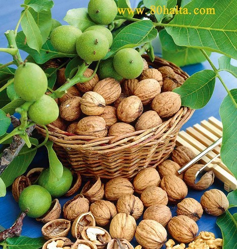

ئالدىنقى يازما
ئالدىنقى يازما كېيىنكى يازما
كېيىنكى يازما
ناشتىلىق ھەققىدە ئىككى كەلىمە
ئاپتور:Birzat ۋاقتى:2012-10-10


ئەسسالامۇ ئەلەيكۇم بىرزات ھەكىم. چوڭلاردىن ئەتتىگەنلىك ناشتىنىڭ ئىنتايىن موھىملىقى ھەققىدە ئاڭلايتتىم. لىكىن يەنىلا خىزمەت جىددىيچىلىكى دەپ تولا ھاللاردا ناشتا قىلمايلا ئۆيدىن چىقىپ كىتەتتىم. تويدىن كىيىن بۇ ئادىتىمنى سەل ئۆزگەرتىشكە تىرىشقان بولساممۇ لىكىن كىچىككەندەك قىلىمەن. ئۆتكەندە تەكشۈرتۈشتە ئۆتتە ياللۇغ، قۇمسىمان تاش پەيدا بوپتۇ دەيدۇ. ئانچە-مۇنچە ئاشقازىنىم يېقىمسىز بولىدىغان ئالامەتلەر بار. ئۇندىن باشقا تۇرۇپلا بېشىم قايغاندەك، ئولتۇرغان ئورنۇمدىن تېزلا تۇرسام كۆزۈم قاراڭغۇلاشقاندەك بولىمەن. مەندىكى بۇ ئالامەتلەرنىڭ ناشتا قىلماسلىق بىلەن مۇناسىۋىتى بارمۇ؟ ناشتىلىق ھەققىدە ئىككى كەلىمە گەپ قىلىپ بەرگەن بولسىلا، قۇلىقىمدا مەھكەم ساقلاپ ساقلىقىم ئۈچۈن غەيرەت قىلاي! يولدۇشۇممۇ ناشتىلىققا ئەھمىيەت بەرمەيدۇ. ناشتىلىقتا قانداق تاماق يېسە مۇۋاپىق بولىدىغانلىقى ھەققىدىمۇ توختالغان بولسا مەن كۈندە ئەتتىگىنى بالدۇرراق تۇرۇپ تاماقلارنى تەييار قىلىپ يولدۇشۇم ھەم ئۆزۈمنى ناشتا قىلدۇرۇپ يولغا سالغان بولسام. رەھمەت.

ۋەئەلەيكۇم ئەسسالام. كۆپۈنچە ھاللاردا خەيرىلىك باشلانغان بىر ئىشنىڭ ئاخىرى ياخشى بولغىنىدەك بىر كۈنلۈك ھايات پائالىيىتىمىزئۈچۈن ناشتىلىق ئىنتايىن موھىم. مېڭىگە زۆرۈر قۇۋۋەتلەر ئاساسلىقى قاندىكى قەنتتىن قوبۇل قىلىنىدۇ. مېڭىگە زۆرۈر بولغان ئىنىرگىيە كەچتە ئۇخلاش جەريانىدا كۆپلەپ خورىغانلىقتىن سەھەردە ئويغانغاندا قۇۋۋەتكە ئىھتىياجلىق بولىدۇ. ناشتىلىق قۇۋۋەتلىك، سۈپەتلىك قىلىنغاندا چوڭ مېڭە ئىھتىياجلىق زۆرۈر ئوزۇقلۇقلارنى تولۇقلىيالايدۇ. ناشتا قىلمايلا ئالدىراپ ئۆيدىن چىققاندا قاندىكى قۇۋۋەتلەرنىڭ-قان قەنتى تۆۋەن بولۇپ مېڭىگە كېرەكلىك ئىنىرگىيەنى تولۇقلاپ بىرەلمەي ئاسانلا ئەستە ساقلاش ئىقتىدارى تۆۋەنلەش، ئىنكاسى ئاستا بولۇش، ئىزلەڭگۈلۈك، روھسىزلىق، چارچاش پەيدا بولۇپ خىزمەت ئۈنۈمىگە تەسىر يېتىدۇ. ناشتىغا ئەھمىيەت بىرىلمىگەن ئەھۋالدا چۈشلۈك تاماقنى كۆپ يەۋىلىپ ئون نەچچە سائەت بىكار تۇرغان ئاشقازان-ئۈچەينىڭ بېسىمىنى ئاشۇرۋېتىدۇ. بۇنىڭ بىلەن ئاشقازان ئۈچەي يىمەكلىك تەركىبىدىن ئۆزىگە جىددىي كېرەكلىك بولغان قەنت تەركىبىنى ئايرىشتىن باشقا يىمەكلىكلەرنى پارچىلاپ ھەزىم قىلىش ئۈچۈن كۆپ مىقداردا ئاشقازان سۇيۇقلىقى ئاجرىتىپ چىقىرىشقا مەجبۇر بولىدۇ. لىكىن بۇنى تېزلا بىر تەرەپ قىلىپ بولالماي ئاسانلا ياغ كىسلاتاسىغا ئايلاندۇرۇپ قويۇپ ئاشقازان ئىچىنىڭ كىسلاتالىقىنى ئاشۇرۋېتىدۇ. بۇنىڭ بىلەن ئاق قان ھۈجەيرىلىرىنىڭ قوشۇلىشى چەكلىنىپ بەدەننىڭ ئىممۇنېت كۈچى ئاجىزلايدۇ. شۇنىڭ بىلەن ئاشقازان، ئۆت، ئۈچەي ياللۇقى قاتارلىق كېسەللىكلەر پەيدا بولىدۇ.

داۋاملىق ناشتا قىلماي يۈرۈيدىغان كىشىلەردە بولىدىغان ئورتاق كېسەللىكلەر ئاساسەن ئاشقازان-ئۆت، ئۈچەي كېسەللىكلىرى، قان ئازلىق، يۈرەك مېڭىگە قان يېتىشمەسلىك ۋە باشقا ئوزۇقلۇق يېتىشمەسلىكتىن بولىدىغان كېسەللىكلەردۇر. سىلى ئېيتقان ئالامەتلەر ئاساسەن ئەتتىگىنى ناشتا قىلماسلىق، ياكى مىزاجغا مۇۋاپىق ئوزۇقلىنالماسلىق بىلەن مۇناسىۋەتلىك.
ئۆت كېسەللكلىرىنىڭ پەيدا بولۇش سەۋەبلىرىگە قارىتا ئاياللار ئۈستىدىن ئىلىپ بارغان بىر تۈرلۈك تەكشۈرۈشلەردە ئۇزۇن مۇددەت ئەتتىگەندە ناشتا قىلماسلىق سەۋەبىدىن ئۆت تېشى كېسەللىكلىرى كىلىپ چىقىدىغانلىقىنى بايقىغان. چۈنكى ئۇزۇن ۋاقىت ئاچ قورساق تۇرغاندا ئۆي سۇيۇقلىقىدىكى تەركىبلەردە ئۆزگىرىش ھاسىل بولۇپ ئۆت كىسلاتاسى ئازىيىپ كېتىدۇ، خولىستېرىننىڭ مىقدارى ئۆزگەرمەيدۇ. شۇنىڭ بىلەن يۇقۇرى خولىستېرىنلىق ئۆت سۇيۇقلىقى پەيدا بولىدۇ. خولىستىرىننىڭ مىقدارى يۇقۇرلاپ ئاخىرىدا قاتتىقلىشىپ تاش پەيدا بولىدۇ.
ناشتىلىق ھەققىدە مۇنداق بىر ھېكايەت بار ئىكەن:
جاھانغا مەشھۇر نامى پۇر كەتكەن تېۋىپ لوقمان ھەزرەتلىرىنىڭ كۈيئوغلى ناھايىتى ساغلام كىشى بولۇپ بىرەر قېتىممۇ لوقمان ھەكىمگە كېسەل كۆرسەتكىلى كەلمەپتۇ. بۇنىڭدىن ئەجەبلەنگەن لوقمان ھەكىم قىزىدىن سوراپتۇ:
- ئىرىڭ كېسەل كۆرسەتكىلى بىرەر قېتىممۇ ئالدىمغا كىلىپ باقمىدى، ئۇ تەن ساقلىقىنى ئاسراشتا ئۆزىگە قانداق سەۋەب قىلىدۇ؟
- ئۇ ھەر كۈنى سەھەر تۇرۇپ تاھارەت ئىلىپ بولغاندىن كىيىنلا بىر بۇردا نان بىلەن ناشتا قىلماي تۇرۇپ ھېچ ئىش قىلمايدۇ، دەپ جاۋاپ بىرىپتۇ.
- بۇنىڭدىن كىيىن ھەر ئاماللارنى قىلىپ ئەتتىگەندە ئىرىڭنى ناشتا قىلدۇرمىغىن، قانداق قىلىدۇ كۆرۈپ باقىلى، - دەپتۇ لوقمان ھەكىم.

قىزى دادىسىنىڭ كۆرسەتمىسى بويچە قىپتۇ. لىكىن كۈيئوغۇل ئادىتى بويچە ھەر كۈنى سەھەردە بىر كاپام بۇغداي ياكى قوناقنى ئاغىزىغا سىلىۋىېلىپ ئىشقا ماڭىدىغان بوپتۇ. بۇ ئىشتىن خەۋەر تاپقان لوقمان ھەكىم ئۆيدىكى يېگىلى بولىدىغانلىكى نەرسىلەرنى يوشۇرۇپ قويۇشنى قىزىغا تاپىلاپتۇ. كۈيئوغۇل ئامالسىزلىقتىن ئۆينىڭ تېمىدىن بىر پارچە سۇۋاقنى ئاغزىغا سىلىۋىلىپ ئىشىنى قىلىۋېرىپتۇ. بۇنىڭدىن خەۋەر تاپقان لوقمان ھەكىم قىزىغا:
- ئىرىڭ مەندىنمۇ ئۇستا تېۋىپ ئىكەن، ئۆمرىدە كېسەل بولمىغۇدەك، دەپتۇ. شۇنىڭدىن كىيىن ئەتتىگىنى چوقۇم ناشتا قىلىش ئادەتكە ئايلانغانمىش.
تۇرمۇش تەرتىۋىنىڭ قالايمىقانلىقى سەۋەبلىك كەچ يېتىپ ۋاقچە ئورنىدىن تۇرىدىغان ئادەت كۆپۈنچە شەھەرلىكلەردە ئوموملاشقىلى تۇرغاندەك قىلىدۇ. ئەتتىگىنى يۈز-كۆزىنى ھاپىلا-شاپىلا يۇيۇپلا ئىش ۋاقتىغا ئۈلگۈرۈش، يوقلىمىدىن ئۆتۈش ئۈچۈن ناشتىغا تۈزۈكرەك ئەھمىيەت بەرمەستىن پالاقشىپ يۈگۈرۈشىدىكەن. كەچلىرى سورۇندارچىلىق، يەپ ئىچىش ئەۋجىگە چىقىدىكەن. دېمەكچى بولغان گەپ ئەسلى موھىم بولغان ناشتىلىققا سەل قارىلىپ يەڭگىل، ئاز يېيىشكە زۆرۈر بولغان كەچقۇرۇندا ئېغىر تاماقلار بىلەن غىزالىنىپ بەدەننىڭ نۇرمال تەڭپۇڭلىقىدا تەتۈرلۈك پەيدا قىلىش ئەلۋەتتە ئېغىر ئاقىۋەتلەرنى كەلتۈرۈپ چىقىرىدۇ.
مەندىن داۋاملىق ھەسەل ئالىدىغان بىر يېزا كادىرى بار ئىدى. بۇ كىشى يازدا يېزىدىكى 10 نەچچە شۇجى-باشلىقلار بىلەن خوتەنگە ساياھەتكە بارغاندا تېۋىپقا كۆرۈنۈپتىكەن. ھەممىسى دېگۈدەك يوغان قورساق، كۆزلىرىدىن ماي تېمىپ تۇرغان ئادەملەر بولغاندىن كىيىن تېۋىپ ھەممىسىنى دېگۈدەك جىگەرنى ماي قاپلىغان، قان قويۇق، ئۆت ياللۇقى، يۈرەك-قان تومۇر كېسەللىكلىرى، مەزىبېزى ياللۇقى، بۆرەك ئاجىزلىغان دېگەندەك كېسەللىكلەر بىلەن دىئاگنۇس قويۇپ بىرەر يېشىكتىن دورا تەييارلاپ بىرىپتۇ. ھىلىقى دۇكىنىمنىڭ خىرىدارى بولمىش كادىرغا نۆۋەت تەككەندە تومۇرنى تۇتۇپ ئۇزۇن تۇرۇپ كېتىپ سىلىدە كېسەللىك دېگۈدەك ئىش يوق ئىكەن. سىلى ھەر كۈنى ئەتتىگەنلىك ناشتىدا سېڭىپ پىشقان نان بىلەن ھەسەل يەيدىغان ئوخشايلا دەپ ھېچقانداق دورا بەرمەپتۇ. شۇنىڭ بىلەن بۇ ئادەم ھەسەلگە تېخىمۇ بەك ئىخلاس قىلىدىغان بولۇپ كەتتى.
ئەتتىگەنلىك ناشتىدا ئادەتتە سۇيۇقئاش، شورپا تۈرىدىكى تاماقلار بولىدۇ، بولۇپمۇ قىش كۈنلىرى شۇنداق. لىكىن ئەتتىگەنلىك ناشتىدا قورۇما تاماق، كاۋاپ، قازان نېنى دېگەندەك قوقاققا تېگىدىغان تاماقلار بىلەن غىزالىنىش سالامەتلىككە زىيانلىق. ئەتتىگەنلىق ناشتىلىققا تەييار قىلىشقا تېگىشلىك ئوزۇقلار ئاساسلىقى مۇنۇلار: ھەسەل، گۈلقەنت، ياڭاق، بادام، ئۈزۈم، سېڭىپ پىشقان ئىسسىق نان، سۈت، ئۈزۈم، خورما دېگەندەكلەر. ھەر كىم ئۆز شارائىتى، مىزاج ئالاھىدىلىكىگە ئاساسەن ناشتىلىق تەييارلىسا بولىدۇ.

 يازما مەنبەسى: بېكەت ئەسىرى
يازما مەنبەسى: بېكەت ئەسىرى خەتكۈش: ناشتا غىزا ھەسەل
خەتكۈش: ناشتا غىزا ھەسەل  مۇناسىۋەتلىك يازمىلار:
مۇناسىۋەتلىك يازمىلار:
 قايتۇرما
قايتۇرما ]
]مەن قايسى دورىلارنى يسەم سەللىمازا ساقيالايمەن .. ئۆزۈم ھازىر ئۈرۈمچىدە تۇرۇشلۇق ناۋادا سىلە بار جايدا تۇرغان بولسام يېنىللىرىغا بارغان بولاتتىم .. لېكىن شارائىت يار بەرمىدى .. بۇ يەردىكى مىللى تىۋپنىڭ دورىسنىمۇ ئىشلىتىپ باقتىم لېكىن ئۈنۈمىنى تازا دىگەندەك كۆرەلمەي ۋاتىمەن .. شۇڭا ماڭا ياردەم قىلغان بولسىلا بۇ يەردىكى قايسى دورىخانلارنىڭ دورىسى ياخشى ھەم ئۈنۈملۈك ئىشەنچىلىك ..سىلى ھەقچان تۇنۇيلا بۇ يەردىكى تىۋىپلارنى شۇڭا ماڭا ياردەم قىلغان بولسىلا ماقۇلمۇ ئاكا ئاللاھ رەھمەت قىلسۇن ئاكا ماڭا بىر ياردەم قىلسىلا بولامدۇ ؟؟چ چ نومۇرۇم 958122589 خەت قالدۇرسىلىمۇ بولىدۇ چ چ گا ياكى مۇشۇ ئىنكاسغا جاۋاپ يازسىلىمۇ بولىدۇ..
man buyil 35 ga kir dim badinim bak oruh hili burun tak xurat sam siz da kurut bar kan dap شۇ نىڭغا قارىتا دورا بەرگەن لىكىن ئۈنۈمى بولمىدى ئۇيغۇر تىبابىتىدە بىزدەك مۇشۇ ياشتىكىلەرنىڭ شۇ مەددە قۇرۇتنى چۇشۇردىغان دورىسى بارمۇ ؟
بولسا بەدەننى سىمەرتىدىغان دورا بولامدۇ ياكى ئوزۇقلۇق بولامدۇ بىر چارىسىنى دەپ بەرگەن بولسىڭىز جاۋابىڭىزغا ئىنتىزار بۇلۇپ قالدىم .
مەن تۇنجى قېتىم بلوگلىرىنى زىيارەت قىلىۋاتىمەن ،بەكلا كىچىكىپ بۇ بلوگ بىلەن يۈز كۆرۈشكەنلىكىمنى ھېس قىلدىم.
مېنىڭ ئۆزلىرىدىن سالامەتلىك توغرىسىدا مەسلىھەت سوراش ئويۇم بار ئىدى،مۇمكىن بولسا QQچ چ نومۇرلىرىنى قالدۇرۇپ قويارلىمۇ؟مېنىڭ نومۇرۇم :435236293،ياكى بولمىسا بىۋاستە تېلېفۇن ئۇرسام بولارمۇ؟
جاۋاپ قايتۇرۇشلىرىنى ئۈمىد قىلىمەن . رەھمەت سىلىگە.
ئاياللاردىكى خالتىلىق ئىششىققا مەنپەت قىلىدىغان ۋە زىيان قىلىدىغان يىمەكلىكلەرنى بىلەي دىگەنتىم.ئاللاھ رىزاسى ئۈچۈن ياردەم قىلغان بولسىلىرى؟
مەن بۇيىل 35ياشقا كىردىم.بېشىمنىڭ ئىككى چېكىسى ئاقىرىپ كەتتى ،ئاتامنىڭمۇ ياش تۇرۇللا چېچى ئاقىرىپ كېتىپتىكەن،بەلكىم ماڭا ئېرسىيەت قالغان بولىشى مۇمكىن،بىراق ئايال كىشى بولغاندىكىن يەنىلا گۈزەللىككە ئىنتىلىدىكەنمىز ،بولسا مۇشۇنىڭغا بىرەر مەسلىھەت بەرگەن بولسىڭىز.
يەنە بىر باش قېتىنچىلىقىم بار ئىدى،مەن سوغۇق يىمەكلىكلەر گە بەك ئامراق ،تامىقىممۇ ئانچە جىق ئەمەس بىراق بارغانسىرى سەمرىپ كېتىۋاتىمەن .مېنىڭ بەك ئۇرۇقلىغىم بار ئىدى،بولسا ياخشى مەسلىھەتلىرىڭىزنى مەندىن ئايىمىغايسىز ،رەخمەت سىزگە ئاۋارە قىلىپ قويدۇم.